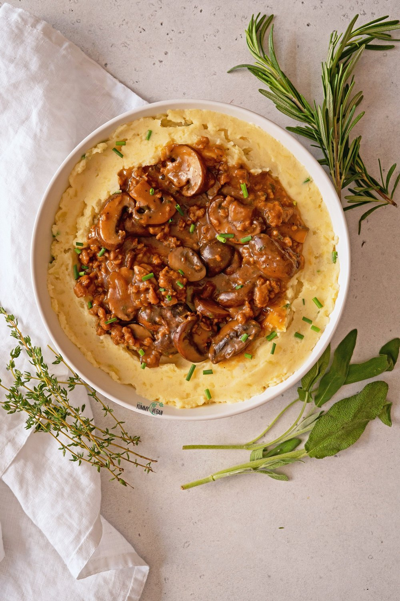

Vegan Sausage with Polenta and Mushroom Gravy

Description
I was vegan for a few years and I made this recipe for some of my meat eating friends. They really loved it, it's savory, carbheavy and oh so delicous.
It will have you licking the Umami-rich sauce off of the plate.
Ingredients
- Vegan Beef Grounds (tofu mince)
- Brown Mushrooms
- Vegetarian Broth
- Mushroom Seasoning
- Nutritional Yeast
- Garlic Powder
- Onion Powder
- Salt
- Pepper
- Your choice of polenta
- Thick Oat or Cashew Milk
- Vegan Butter
- Vegetable Oil
Steps
- We will start this recipe by warming our butter on low heat.
- Once we have a nice warm base, we are going to add our mushrooms. Chop, mince, or slice as you would like.
- Salt, Pepper, and Saute the mushrooms for a good 15 to 20 minutes, allow them to sear and brown. This will help release all of our juices.
- Add butter to the pan as it reduces, once we have a nice brown butter sauce, add garlic and saute until browned.
- At this point sear your vegan beef grounds and allow them to cook in this sauce base.
- Once the grounds have cooked, we will add our vegetarian broth as well as our dry seasonings
(Garlic, Onion, Mushroom, and Nutritional Yeast) and simmer until the sauce reduces.
- Begin to pour your creamy thickener (oat or cashew milk), simmer this until the mix comes together and you achieve the desired thickness.
Salt and pepper to your liking.
- Warm oil in a separate pan, slice and sear the polenta until crispy.
Alternatively, you can make a creamy polenta by using the ground variety and adding to hot water.
- To plate, lay down the polenta, pour the mushroom gravy on top of the polenta. You can sprinkle vegan parmesan on top and some pepper. Enjoy!